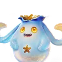

Home首页 / Database数据库 / Pouchwisp錢兜兜

Whisperwake Isles 008潮音群島 008
Pouchwisp錢兜兜
Dark暗
Regen回能
Pouchwisp has a single form recorded so far. Its stats, type, habitat and evolution requirement are below.錢兜兜 目前只记录到一个形态。它的数值、属性、栖息地和进化条件都在下面。
One scale on all six axes, 0–140 — the same one on every species page.六个轴共用一套刻度 0–140，本站每一页的物种都是这套。
- HP生命
- 101
- ATK攻击
- 110
- P.DEF物防
- 80
- M.DEF魔防
- 70
- BREAK击破
- 50
- REGEN回能
- 109
Forms形态
-
Whisperwake Isles 008A潮音群島 008A base form基础形态
Pouchwisp錢兜兜
Dark暗- Where地点
- Crescent Bay新月海湾
- Evolves into进化为
- —
Evolution line进化线
Coinwisp→Pouchwisp
The level and the materials are not shared between forms. Each form's own page carries its own requirement.等级和材料在形态之间并不通用。每个形态的进化条件见它自己的页面。